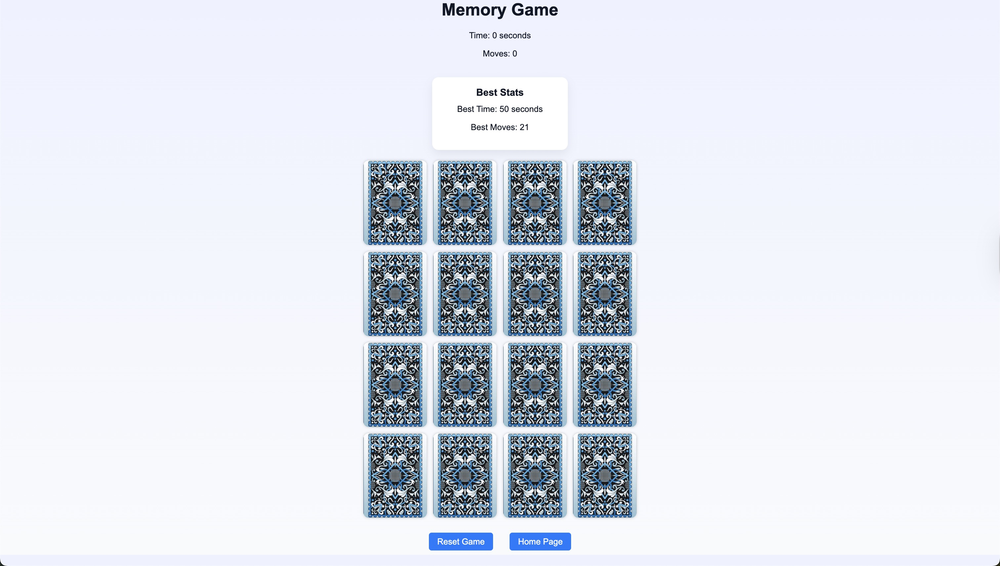
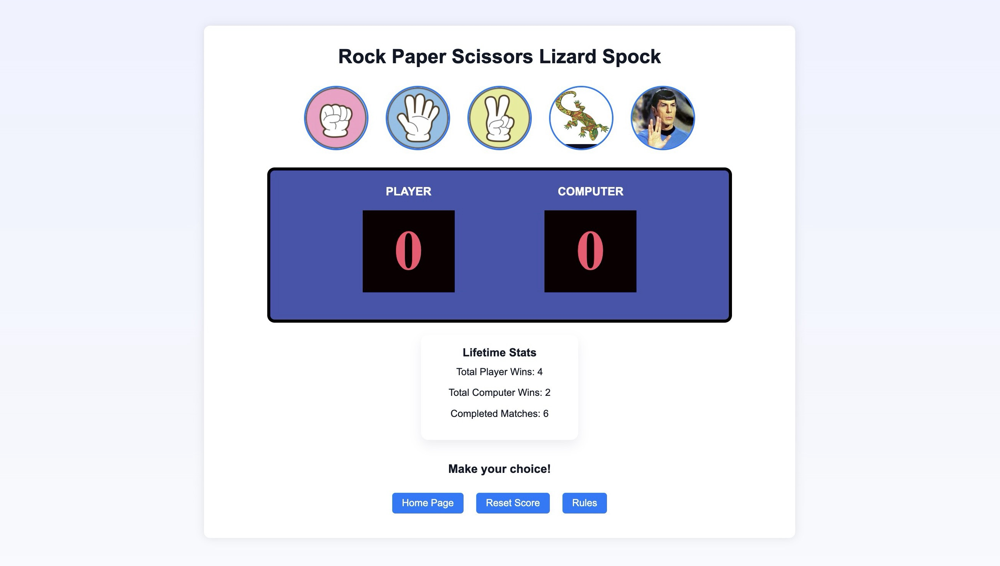
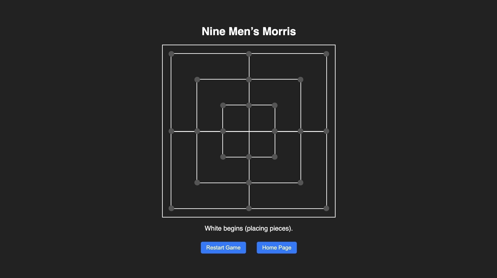

Interactive UI
Built with vanilla JavaScript to handle user input, game logic, board updates, and dynamic rendering.
Antonio Corona | Front-End JavaScript Project
A browser-based collection of interactive games built with HTML, CSS, and JavaScript. This project showcases DOM manipulation, game-state management, responsive design, and reusable front-end structure.
Built with vanilla JavaScript to handle user input, game logic, board updates, and dynamic rendering.
Includes a memory game, Rock Paper Scissors Lizard Spock, and Nine Men’s Morris in one cohesive browser project.
Designed to demonstrate front-end fundamentals, maintainable code structure, and clean project presentation on GitHub.
Playable Games
Each game was built as part of a larger effort to strengthen front-end development skills through interactive browser projects.

Memory & Matching
A card-matching game that challenges players to remember card locations while tracking moves and elapsed time.

Fast Decision Game
An expanded version of Rock Paper Scissors with five possible choices, score tracking, and round-based results.

Strategy Board Game
A browser implementation of the classic strategy game featuring piece placement, mill detection, movement, and win logic.
Technology